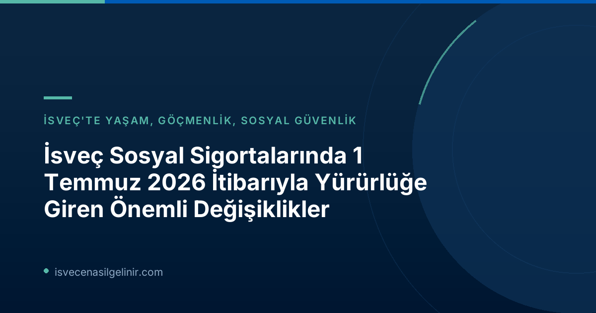

Sosyal Sigorta Sistemindeki Yeni Reformlar Neden Önemli?
İsveç sosyal sigorta sistemi, ülkenin refah devleti anlayışının temel taşlarından biridir. Vatandaşların ve ülkede ikamet edenlerin çeşitli sosyal haklarını güvence altına alan bu sistem, zaman zaman güncellenerek değişen koşullara adaptasyon sağlar. 1 Temmuz 2026 tarihinde yürürlüğe giren yeni yasa değişiklikleri, özellikle sistemin sürdürülebilirliğini ve güvenilirliğini artırmayı hedeflemektedir. Yanlış ödemelerle mücadele ve sosyal yardım dolandırıcılığını önleme, bu reformların öncelikli amaçları arasında yer alıyor.
Haksız Ödemelerde Yaptırım Ücreti (Sanktionsavgift) Devreye Giriyor
İsveç Riksdagen (Parlamento) tarafından alınan kararla, 1 Temmuz 2026'dan itibaren Försäkringskassan ve Pensionsmyndigheten, yanlış bilgi veren veya durum değişikliklerini zamanında bildirmeyen kişilere sanktionsavgift adı verilen bir yaptırım ücreti uygulayabilecek. Bu adımın temel amacı, haksız yere yapılan ödemelerin önüne geçmek ve sosyal güvenlik sistemine olan güveni pekiştirmektir.
Kimleri Etkiliyor?
Bu düzenleme, Försäkringskassan veya Pensionsmyndigheten'e yanlış bilgi veren ya da gelir, aile durumu, ikamet gibi önemli değişiklikleri bildirmeyerek haksız yere ödeme almasına neden olan herkesi kapsamaktadır. Bilgilerin eksik veya yanlış beyan edilmesi, bu yaptırımın uygulanmasına yol açabilir.
Yaptırım Ücreti Ne Kadar?
Haksız Ödeme Yaptırım Ücreti Detayları
- Uygulama Alanı: Yanlış bilgi veren veya durum değişikliğini bildirmeyen kişiler.
- Uygulayan Kurumlar: Försäkringskassan ve Pensionsmyndigheten.
- Yaptırım Oranı: Haksız yere ödenen ve geri ödenmesi gereken miktarın %25'i.
- Minimum Ücret: En az 2.368 SEK (2026 yılı fiyat taban miktarının %4'ü).
- Bu ücretlendirme, 1 Temmuz 2026 tarihinden itibaren geçerlidir.
Sosyal Yardımlara 3 Yıla Kadar Engel (Bidragsspärr)
Sosyal sigorta sisteminin kötüye kullanımını engellemeyi amaçlayan bir diğer önemli değişiklik ise bidragsspärr, yani yardım kesintisi/engeli uygulamasıdır. Bu yeni yaptırım, kasten veya ağır ihmal sonucu haksız ödemelere neden olan kişilerin belirli sosyal yardımlardan geçici bir süreyle mahrum bırakılmasını öngörüyor.
Kapsam ve Süre
Yardım engeli, durumun ciddiyetine göre birkaç aydan üç yıla kadar değişebilen bir süreyle uygulanabilir. Bu önlem, özellikle sosyal sigorta sistemini sistematik olarak istismar eden veya buna teşebbüs eden kişilere karşı caydırıcılık sağlamak üzere tasarlanmıştır. Bu tür durumlarda yasal süreçler ve sonuçları hakkında daha detaylı bilgi için sverigemedborgarskapsprov.com adresindeki kaynakları inceleyebilirsiniz.
Amacı
Riksdagen, bu yeni düzenleme ile sosyal sigorta sistemine karşı sistematik suistimallere karşı daha güçlü bir koruma kalkanı oluşturmayı amaçlamaktadır. Böylece, sistemin dürüst kullanıcıları korunurken, haksız kazanç peşinde koşanlar için ciddi caydırıcılık unsurları devreye sokulmuş oluyor.
Ebeveyn Parası Başvurularında Büyük Kolaylık: Ön Bildirim Şartı Kalktı
Sosyal sigorta alanındaki değişiklikler sadece yaptırımlarla sınırlı değil, aynı zamanda vatandaşlara kolaylıklar da getiriyor. 1 Temmuz 2026 tarihinden itibaren, ebeveyn parası (föräldrapenning) başvurularında önemli bir bürokratik engel kaldırıldı.
Yeni Uygulama Nedir?
Artık Försäkringskassan'a ebeveyn parası için başvuruda bulunmak isteyen ebeveynlerin, izin süresi başlamadan önce ayrı bir bildirim yapma zorunluluğu ortadan kalktı. Ebeveynler, çocuklarıyla birlikte ebeveyn izni kullanmak istediklerinde doğrudan başvurularını Försäkringskassan'a iletebilecekler.
Neden Bu Değişiklik Yapıldı?
Hükümet, bu değişiklikle birlikte ebeveyn parası başvuru sürecini basitleştirmeyi ve ebeveynlerin üzerindeki idari yükü azaltmayı hedefliyor. Bu sayede, yeni ebeveynlerin odaklarını tamamen çocuklarına ve ailelerine verebilmeleri amaçlanmaktadır. Önceki "bildirim yap, sonra başvur" sistemi, gereksiz bir adım olarak değerlendirilmiş ve kaldırılmıştır.
Bu Değişiklikler Sizi Nasıl Etkiliyor?
İsveç sosyal sigorta sistemindeki bu yeni düzenlemeler, ülkede yaşayan herkes için önemli sonuçlar doğurabilir. Haksız ödemelerin ve dolandırıcılığın azaltılması, sistemin genel işleyişine olan güveni artırırken, dürüst vergi mükelleflerinin haklarının daha iyi korunmasını sağlayacaktır. Özellikle bir ödenek veya yardım alıyorsanız, başvurularınızda her zaman doğru ve eksiksiz bilgi verdiğinizden emin olmanız, durumunuzda herhangi bir değişiklik olduğunda ise Försäkringskassan'a veya ilgili kuruma derhal bildirmeniz büyük önem taşımaktadır. Ebeveynler için ise başvuru sürecinin kolaylaşması sevindirici bir gelişmedir.
Referanslar
İsveç'teki Sosyal Haklarınız ve Göçmenlik Süreçleri Hakkında Daha Fazla Bilgi Edinin
İsveç'teki yaşamınıza dair tüm yasal süreçleri, sosyal haklarınızı ve vatandaşlık başvuru koşullarını öğrenmek için kapsamlı rehberlerimize göz atın. Bilgilerinizi güncel tutarak haklarınızı koruyun ve İsveç'teki hayatınızı kolaylaştırın.